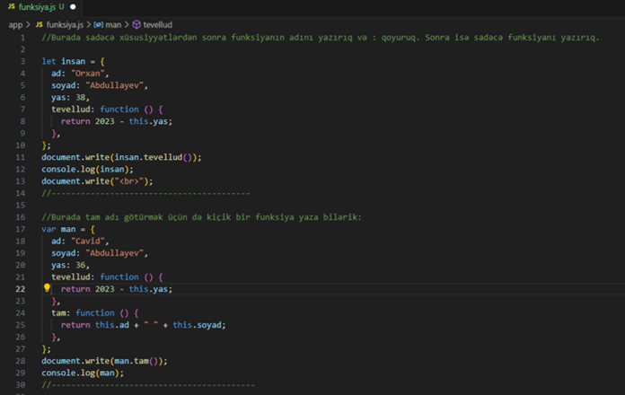
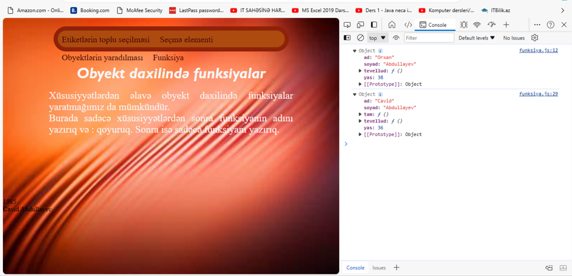

Obyekt daxilində funksiyalar
Xüsusiyyətlərdən əlavə obyekt daxilində funksiyalar yaratmağımız da
mümkündür.
Burada sadəcə xüsusiyyətlərdən sonra funksiyanın adını yazırıq və :
qoyuruq. Sonra isə sadəcə funksiyanı yazırıq.


Obyekt daxilində yaratdığımız bir xüsusiyyəti silmək üçün
delete operatorundan istifadə edə bilərik.
Beləliklə delete person.yas; yazaraq insan obyektinin
içərisindəki yas xüsusiyyətini silmiş oluruq. Ona görə də onu çap
edərkən undefined yazıldığını görəcəyik. Çünki artıq həmin
xüsusiyyət silinmişdir.